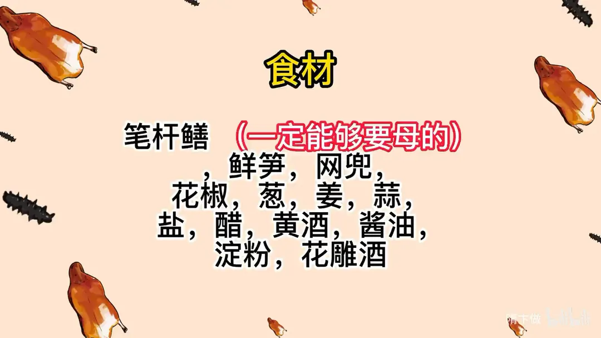
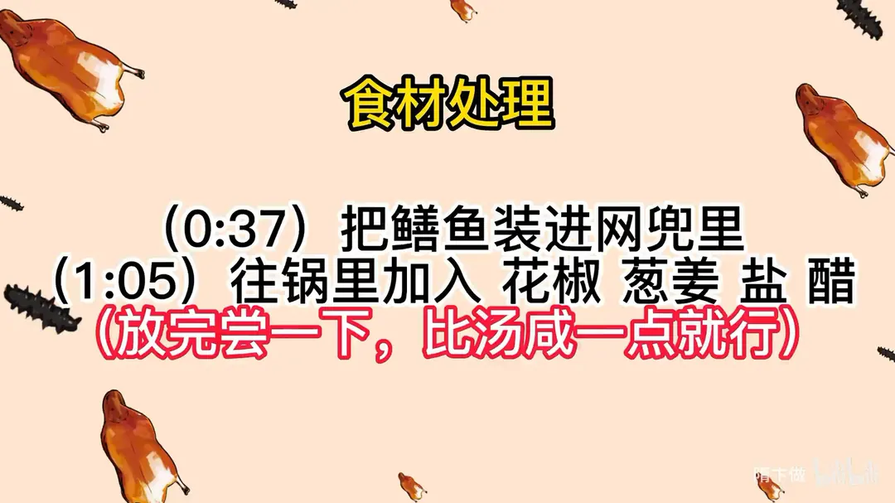
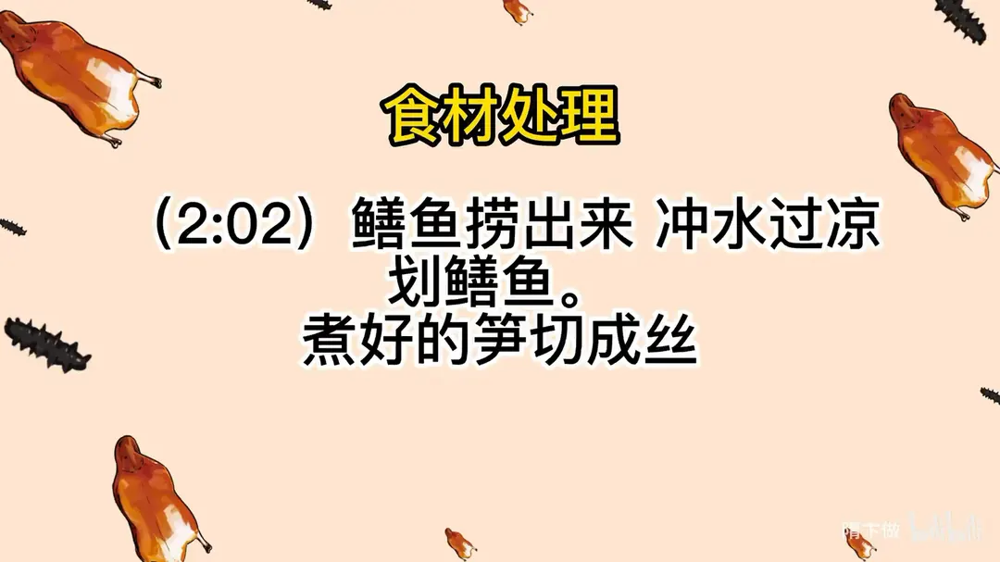
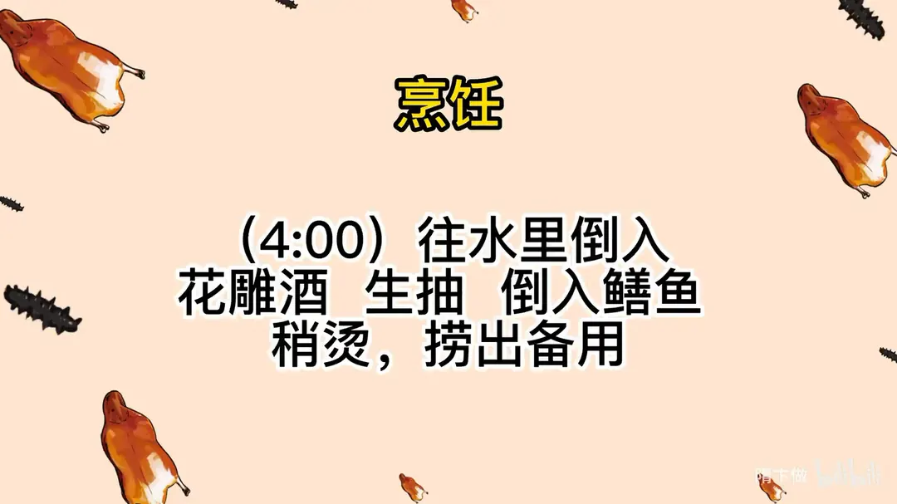
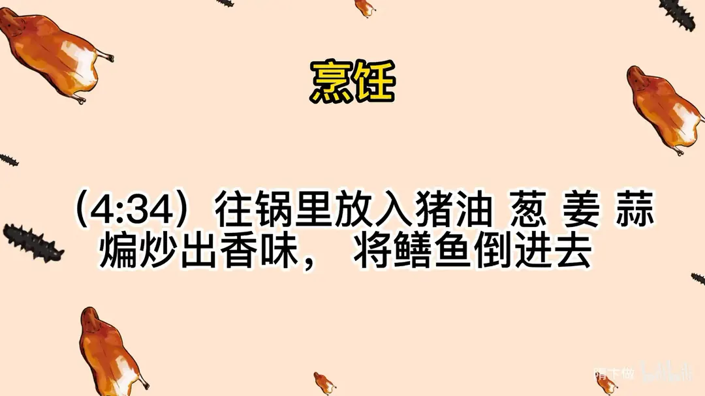
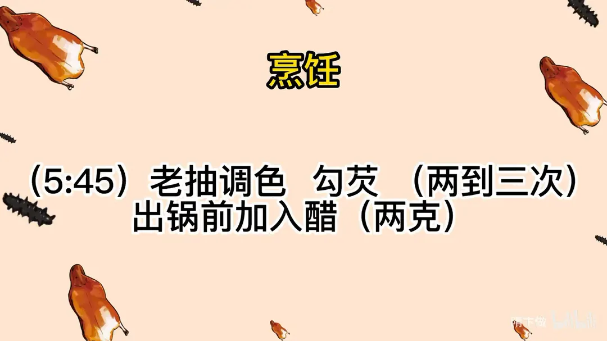
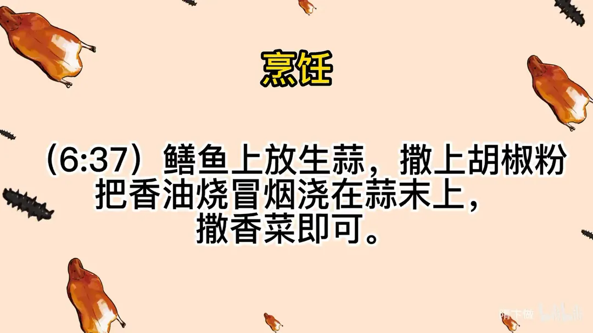

响油鳝糊
隋卞一做。笔杆鳝要挑母的，整条装进网兜下锅烫焖，冲凉后划骨取肉，配笋丝用猪油煸炒、老抽调色、多次勾芡，最后热香油浇在生蒜末上。
原视频：https://www.bilibili.com/video/BV1Zm4y117Qz
食材
笔杆鳝、鲜笋、网兜 等 20 样
| 类别 | 用料 | 用量 |
|---|---|---|
| 主料 | 笔杆鳝（一定够要母的） | 适量 |
| 主料 | 鲜笋 | 适量 |
| 工具 | 网兜 | 1 个 |
| 焯烫 | 花椒 | 适量 |
| 焯烫 | 葱 | 适量 |
| 焯烫 | 姜 | 适量 |
| 焯烫 | 盐 | 适量 |
| 焯烫 | 醋 | 适量（出锅前另用 2g） |
| 焯烫 | 黄酒 | 适量 |
| 烧制 | 花雕酒 | 适量 |
| 烧制 | 酱油 | 适量 |
| 烧制 | 生抽 | 适量 |
| 烧制 | 老抽 | 适量 |
| 烧制 | 猪油 | 适量 |
| 烧制 | 蒜 | 适量 |
| 烧制 | 淀粉 | 适量 |
| 收尾 | 生蒜 | 适量 |
| 收尾 | 胡椒粉 | 适量 |
| 收尾 | 香油 | 适量 |
| 收尾 | 香菜 | 适量 |
步骤
- 装兜：把鳝鱼装进网兜里。
- 调焯水：往锅里加入花椒、葱姜、盐、醋，放完尝一下，比汤咸一点就行。
- 烫鳝：水烧开锅，把鳝鱼放进锅里，等锅里没有动静，把装鳝鱼的网兜剪开，让鳝鱼全都在水里；关火盖盖焖两分钟，处理好的鳝鱼嘴巴大概会张开 90 度。
- 划鳝：鳝鱼捞出来冲水过凉，划鳝鱼；煮好的笋切成丝。
- 回烫：往水里倒入花雕酒、生抽，倒入鳝鱼稍烫，捞出备用。
- 煸炒：往锅里放入猪油、葱、姜、蒜，煸炒出香味，将鳝鱼倒进去。
- 调色勾芡：老抽调色，勾芡两到三次；出锅前加入醋两克。
- 响油：鳝鱼上放生蒜，撒上胡椒粉，把香油烧冒烟浇在蒜末上，撒香菜即可。
讲解要点
难度：★★★★★（烫鳝火候、划鳝手法、多次勾芡三关都要过，任何一关失手都不成菜）
为什么这么做
- 一定买活的笔杆鳝：死鳝鱼肉已变质、血也没放干净，入口就腥，靠调料是盖不住的。
- 活鳝装进带孔网兜再下锅：活鳝遇热水会挣扎乱窜，网兜限制活动，既防溅水烫人，也方便整条捞出。
- 水里放盐和醋：盐和醋共同作用，能把鳝鱼表面的黏液煮掉，划鳝时才不滑手，成菜也不腥。
- 水开下鳝、关火焖两分钟：沸水让鳝鱼迅速定型，关火焖是靠余温把它焖到恰到好处；煮久了肉就糟了，一划就断。
- 焖好立刻过凉：热鳝肉软塌，冷激后肉质收紧，划的时候整条不散。
- 嘴张开约 90 度就是烫好的标志：这是鳝鱼刚刚定型的信号，过了这个程度肉就老了。
- 划鳝要贴着三角骨平行往前推：鳝鱼骨是三角形，斜着下刀会带下碎骨和血污，平行贴骨才划出完整的一条肉。
- 划好后再次过沸水（花雕酒、生抽）：补熟个别没烫透的地方，同时去腥增香；这锅汤会浑，不能再留着用。
- 一定要用猪油：猪油熔点高、香气厚，烧鳝鱼少了它，味道就是「素」的。
- 先煸干水分再补汤汁：鳝鱼先炒掉一部分水分，再吸收酱油汤汁，味道才入味、口感才软嫩。
- 分两到三次勾芡：一次下足芡粉，外面结成块、里面还是稀的；分次勾才能让芡均匀糊住鳝丝，达到「糊」的质地。
- 出锅前 2 克醋：主要是取醋香压住土腥味，而不是要吃出酸味；醋放得太早，香气就散了。
- 香油烧到冒烟再浇：油温够高才能把生蒜末和胡椒粉的香气瞬间激出来，这就是「响油」两个字的由来。
容易翻车
- 鳝鱼在热水里泡久了就糟，划不出整条；看到嘴张开就要捞出。
- 勾芡一次勾完，芡块结团、不匀，成菜发糊不亮。
- 香油温度不够，浇上去不响，蒜香和胡椒香出不来。
- 胡椒粉放少或油不热，吃不出胡椒味，这道菜就失了魂。
原片尾卡







原片文案
AI 字幕校准稿
不知道什么时候，哥们儿多了一个外号叫鳝鱼仙人。先看视频里这段：这个响油鳝糊味道在于在桌子上浇的热油，所以蒜香味更冲，入口之后蒜味等味道直接爆开，味道浑然一体；滑溜的鳝鱼应该很软、入口很滑——这肯定不是当天划的鳝鱼。今天让你们看看鳝鱼仙人怎么做淮扬菜的响油鳝糊。
在北京能买到的鳝鱼差不多就这样，这个也叫笔杆鳝。鳝鱼一定要买活的，死鳝鱼真的是吃不了的。准备一个网兜，这是刚才装笋的网兜，把鳝鱼装到兜里边，封口。为什么要搁网兜？因为活鳝鱼遇到热水会挣扎、满地跑，在热水里溅出水花会烫到我自己，这样就比较方便。一定要用网兜，带眼儿的。
煮鳝鱼的水一定要宽一点、多一点，里边放点花椒、葱姜盐，多放一点。这个盐在煮鳝鱼的时候，它表面的黏液会通过盐一煮就掉了。加醋，加这么多也不酸，里边水多。这些都是去腥增香的调料。因为不知道你们放多少水，盐和醋的量没办法跟你们讲，就跟喝汤的咸味差不多就行。
烧开锅盖，准备好往里倒，迅速盖盖，别让它反应过来，一定要趁它不注意偷袭。你感觉里边没什么动静了，就掀盖看一眼，然后拿剪刀把那个兜剪开，盖盖、关火，焖个两分钟看一眼。现在你看里边好多黏液，你要不加醋和盐是弄不掉的。鳝鱼不能在热水里泡太久，泡时间长了就糟了，捞出来再过一下凉。
煮好的鳝鱼给你们看一眼，它的嘴是这样的，大约张开在九十度左右，不卷、透着不烂。做一把划鳝鱼的工具，筷子削成小刀，你们在家随便找个竹片、一根筷子也可以，一定要削。鳝鱼拿过来，手按住，两个手指夹住它往后滑，这个就出来了，这里边是鳝鱼血和内脏。新鲜的鳝鱼还没烧，一看就软了。鳝鱼的骨头是三角的，一定要贴着骨头平行往前移下来，再来最后一刀，一定要剔干净，骨头上面是没有肉的。鳝鱼骨可以煎一下熬白汤，做面条特别香；鳝鱼血做酸辣汤挺好。
咱们开始烧。锅里上干净水，里面加一点花雕酒，来上点生抽，这就是烹调前的一个入味。水开了之后把划好的鳝鱼倒进去，我们划完之后有可能个别地方不是很熟，也给它处理一下，让它全熟，再有就是烹调前的去腥增香。刚好开锅就行，超过鳝鱼的这锅汤里边很脏，有些渣子会影响出菜的效果，不要了。
把锅烧热，加入猪油，烧鳝鱼离不开猪油，猪油少了烧的不香。把葱姜蒜倒进去，一定要把它炒出香味、变黄了，一闻出香味了，把鳝鱼倒进去，用炝完锅的很香的油来煸炒它。煸炒的同时鳝鱼多余的水分会变成蒸汽，然后烹汤汁的时候它会把味道吃得很足。倒入料酒、酱油，加水。先煸一下让它失去一部分水分，重新再吸收味道，现在补一部分水分，就是为了让鳝鱼更入味、更软嫩。
然后调味：白糖、白胡椒粉适当多放一点，还有盐。小火咕嘟着，把焯过水的笋丝搁里边，搁几粒味精，中火咕嘟，把鳝鱼烧入味。再用老抽调个色。勾芡要分两次，咱们也得两到三次，勾到粘稠糊状。出锅前来上两克醋，这个醋主要是要它那个香味，主要是压腥。
这就可以出锅了。中间放上蒜末、胡椒粉，还没结束，还有最后画龙点睛的那一步：倒入香油，烧到冒烟就行，呲油。把香菜放到旁边。
尝一下，这胡椒粉的味儿也有油，鳝糊的胡椒粉也不能少了，如果吃不出来胡椒粉的味肯定不对。整个味道特别复合，又有鳝鱼本身的香，点的那点香油味挺香，香油跟蒜、跟胡椒粉、跟香菜那个冲击的味道就特别复合。所以一定得热，刚才你看浇下去哗家伙冒泡，证明温度够了。